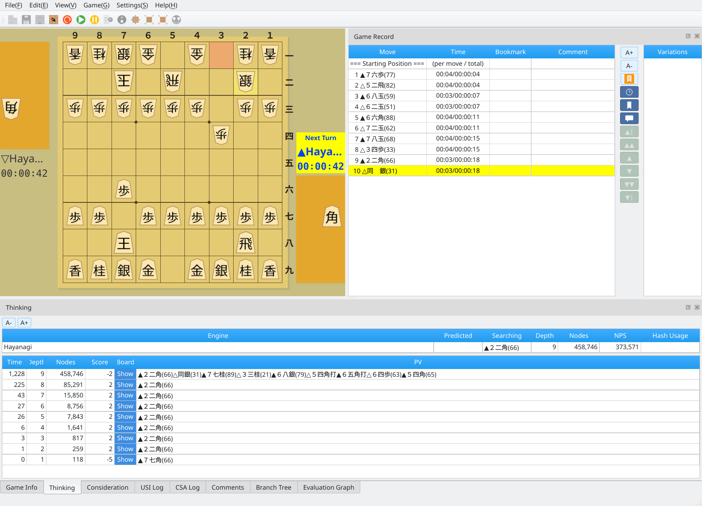
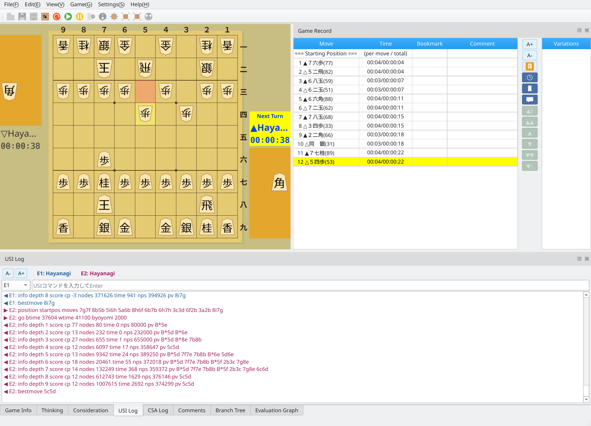
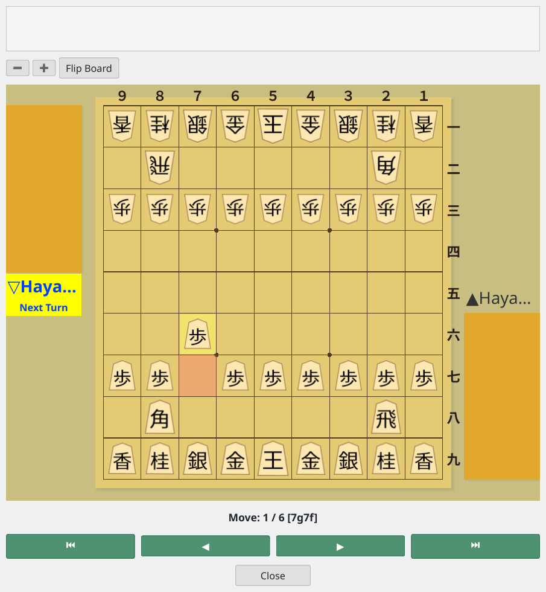
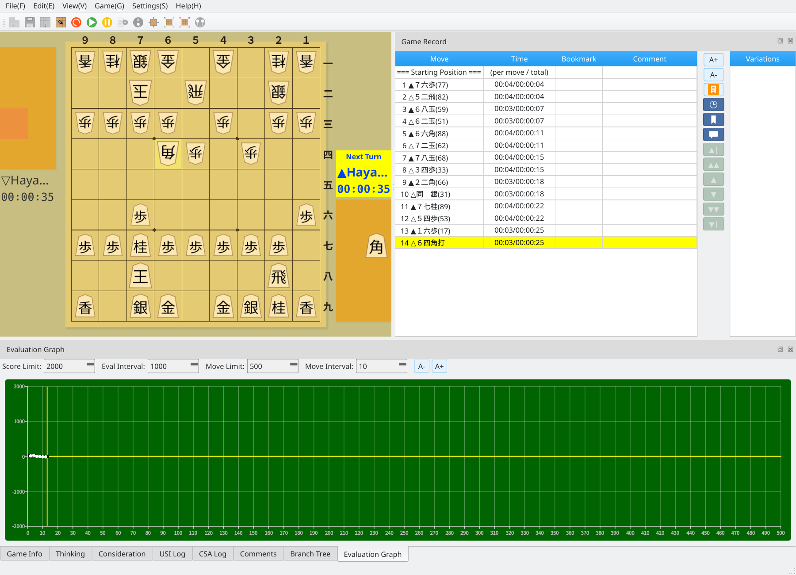
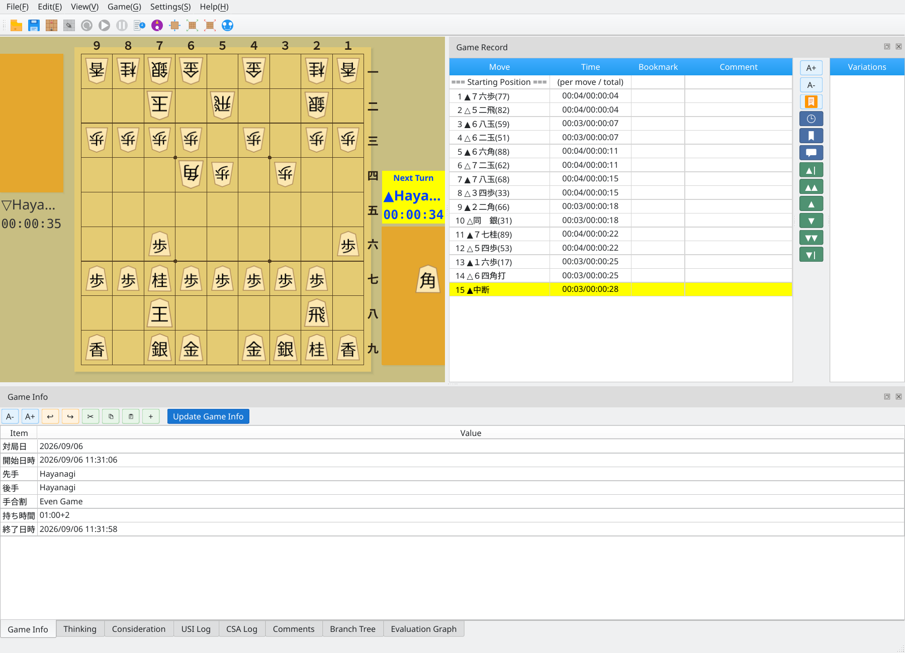

During a Game
View the game record and engine thinking information in real time
Once the game starts, the Thinking tab shows the engine's thinking information in real time.

Thinking tab: live engine thinking information
The USI Communication Log tab shows messages exchanged between the GUI and engine using the USI protocol.

USI communication log: live protocol messages between the GUI and engine
The principal variation window lets you replay the engine's line on a shogi board.

Principal variation display: visualize the engine's line on a board
The evaluation graph shows how the position changes over the game and updates in real time during play.

Evaluation graph: track the position in real time
The Game Info tab displays the game date, start time, Black and White players, handicap, time control, end time, and other details.

Game Info: details about the game
The Branch Tree tab shows moves in variations as well as the main line.

Branch Tree: view the main line and alternative continuations